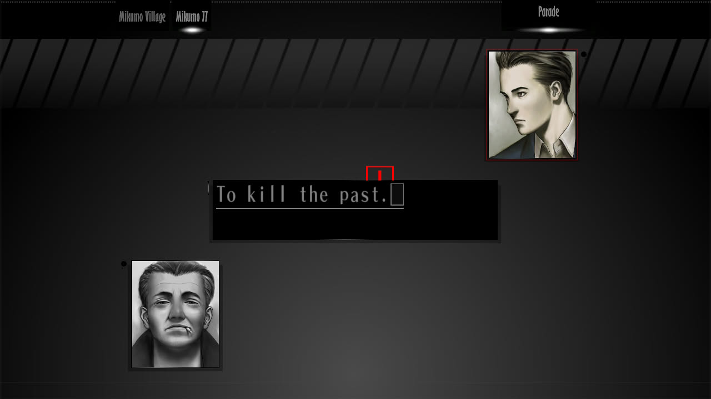
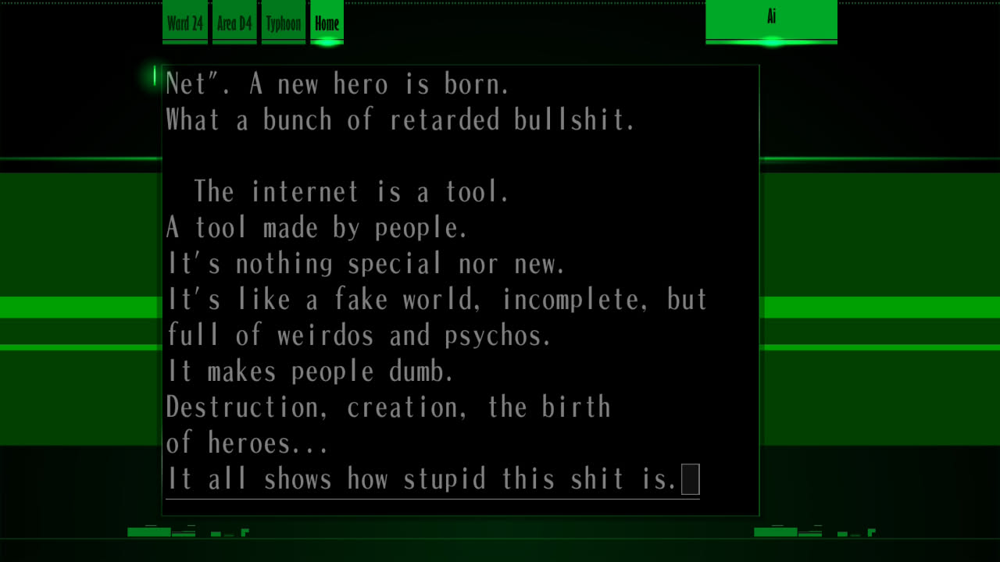

1game1week - Week 3 (1/26/26) - The Silver Case
Hey all! It's Week 3! (1/15 -> 1/22) At this point, I should probably just start posting on Mondays, lol. Like I said before, it just takes a little while to really get to write this stuff so I put it off. I might also be a bit burned out from the large amount of posts I did over last year, but that's just an excuse anyways. Anyways...New games from 1/16 -> 1/21: None! (Total 3)
As of 1/26, my yearly backlog is at -6 (lower is better, -3 since last week). And onto 1g1w. A game is considered "beaten" if I've accomplished the main objective of the game, regardless of how many routes / endings I've achieved. However, it's preferable to get all endings if possible! GAME: The Silver Case PLATFORM: Switch GENRE: Adventure Visual Novel STARTED ON: 1/15 BEATEN ON: 1/19 TOTAL PLAYTIME: 13 hours and 15 minutes (Tracked via in-game time) I've been interested in the Kill the Past series for a little while now. Last year, I played No More Heroes, but only really got the gist of it. A few years back, I played Killer7, but REALLY didn't get it. This time, I played (read) alongside my friend Billy, who wanted to revisit the game again to get ready for the upcoming Romeo is a Deadman. It's nice to start from one of the first games in the series and grasp the overall themes. Thankfully, The Silver Case wears most of what it wants to tell you on its sleeve via the Placebo chapters. Essentially, the game is split into two narratives: the Transmitter narrative in which you follow the Heinous Crimes Unit, solving various... Heinous Crimes.  While they're not all (explicitly) linked to each other, they are thematically linked with a desire to face and move on from the past. Hence, Kill the Past. Some of the events may be slightly obscure or abstract, which is where the second route, Placebo, comes in. In Placebo, you follow Tokio Morishima, a freelance journalist, who is independently researching the cases investigated by the Heinous Crimes Unit. It essentially serves as a way to explain what is going on in the terms of a layman, or at least in less-abstract terms. It's probably easier to say they are simply easier to digest. Weirdly enough, even with me playing the HD version on Switch, the full motion videos looked terrible. It's really not all that simple to describe, so here's a video instead: Given it's (mostly) a visual novel, it's actually quite hard to put everything I want to say into words so that anyone without context can understand. Funnily enough, the game actually talks about the feeling. "These journals are written by writers who are conscious of the reader, right? They use words specifically to create a world only for themselves and the reader... But these journals are written with the 'perfect reader', who can understand and share the writer's feelings, in mind. These people have the entire world as their audience, and yet they sit there writing up stuff that nobody can really understand. These aren't even messages, or real statements, or people who crave attention. They're just little tweets and twitters."  It feels true enough. Even wanting to be objective, it's weird trying to write for an audience other than just myself or someone who might not understand the things I say. At the end of the day, these posts are just me shouting into the void. So does writing for a wide audience really matter? If this were a tree falling in the forest, would anyone hear it? Would it make any difference, whether I write only for myself, or publish these thoughts online? Perhaps it's trying to talk more about the natural human desire to create. Even if it's not necessary, or acknowledged, isn't it nice to make something? To put your voice, your life out there? Isn't it neat how social media can immortalize our thoughts, and massively spread them? Isn't that dangerous, though?
 Thanks for reading! If you need to contact me for any reason, please feel free to email me at aru@hoshikawa-aru.com.
Thanks for reading! If you need to contact me for any reason, please feel free to email me at aru@hoshikawa-aru.com.